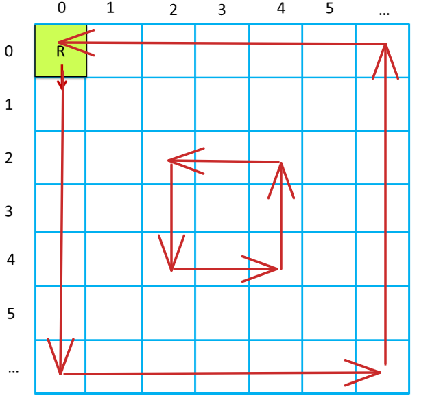
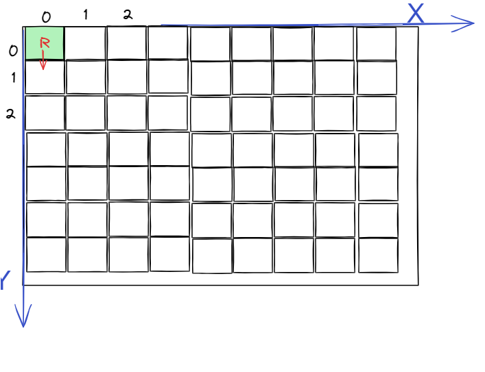
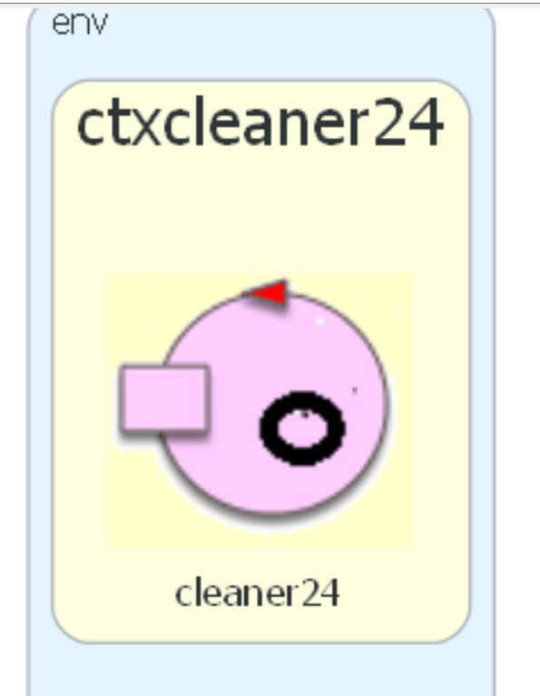
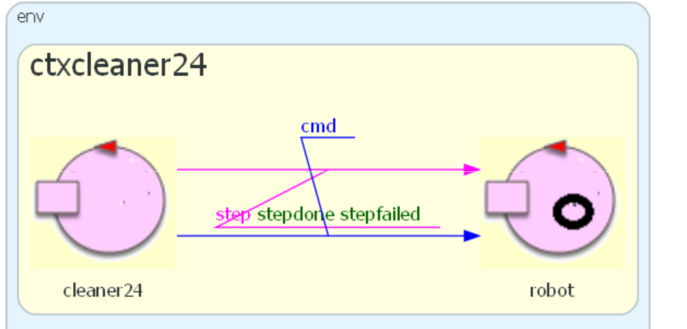
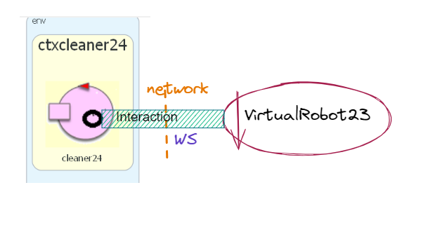

RobotCleaner¶
RC24-requisiti¶
Si vuole definire un sistema software capace di muovere un DDR Robot -> in modo da coprire tutta la superficie della stanza in cui si trova. In modo più specifico, sono dati i seguenti requisiti
RC24-ReqCopertura: il robot deve seguire una strategia di movimento che garantisca di esplorare la superficie in modo completo, anche se vi sono ostacoli nella stanza.
RC24-ReqVerificabilità: deve essere possibile controllare in modo automatico che la copertura sia stata realizzata.
RC24-ReqEstendibilità: attualmente il committente è interessato a muovere il VirtualRobot23, ma in futuro vorrà usare un robot fisico, del tipo riportato in RobotDisi.
Il committente ritiene accettabile discutere un primo prototipo del sistema nel caso di
RC24-analisi dei requisiti¶
In questa fase si fa riferimenmto a un .
La stanza è uno spazio piano Euclideo delimitato da bordi.

Il Bordo perimetrale ha lunghezza
lf+ld+lr+lu.Poichè la stanza è rettangolare, si ha
lf==lr && ld==lu
DR=2R, essendoRil raggio del cerchio in cui può essere racchiuso il robot (virtuale/fisico).
I componenti (inizialmente) necessari per la realizzazione del sistema sono:
Un actor (cui diamo il nome
cleaner24) che realizza l’applicazioneIl VirtualRobot23 (che viene dato)
Un supporto che agevoli la interazione con il robot virtuale o fisico. Al momento disponiamo del POJO VrobotLLMoves24, ma è stata anche prospettata la possibilità di realizzare e utilizzare un servizio, come Vrqak24.
RC24-analisi del problema¶
Come analisti, poniamo in evidenza i seguenti punti.
RC24-Il cuore del problema¶
Il problema consiste nel definire un controllore in modo che la sua strategia di comandi al robot permetta di soddisfare i requisiti RC24-ReqCopertura e RC24-ReqVerificabilità.
RC24-Strategia di movimento¶
Si possono pensare diverse possibili strategie di movimento sistematico () che permettono la copertura. Ad esempio:
Movimento per colonne 
|
Movimento a spirale 
|
Movimento a onde  |
RC24-Il passo del robot¶
Tutte le strategie esaminate si basano su una stessa ipotesi:
il robot si muove per passi di lunghezza DR, esendo DR
il diametro del cerchio di raggio minimo che circoscrive il robot
Il robot come unità di misura¶
In pratica, DR diventa la unità di misura per le distanze.
La stanza stessa può essere pensata come suddivisa in celle quadrate di lato DR.
|  |
|
Movimento per colonne¶
Nel caso della figura di sinistra, il robot lavora ‘per colonne’. In particolare:
: il robot
procede lungo il muro wallLeft fino a incontrare wallDown. Qui gira a sinistra,
fa un passo laterale, poi gira di nuovo a sinistra e procede diritto verso il
muro wallUp; quando lo incontra gira a destra fa un passo laterale, rigira verso destra e di nuovo
procede verso wallDown.
Durante un passo laterale, il robot incontrerà di sicuro wallRight:
come ultima mossa procede lungo
tale muro fino a che non incontra di nuovo un muro (wallUp o wallDown) e qui si ferma,
considerando terminato il lavoro.
Movimento a spirale¶
: il robot procede coprendo aree quadrate di lato DR*N, con N=1,2,..,M.
Questa strategia risulta facile da realizzare per stanza quadrate o quasi, ma è più complicata per
stanza rettangolari con lati di lunghezza diversa tra loro.
Movimento a onde¶
: il robot segue i bordi della stanza, riducendo via via il lati della stanza di
DR, lavorando in una ‘stanza virtuale’ di lati DWallDown - N*DR e DWallLeft - N*DR, con N=1,2,..,M.
RC24-Verifica¶
: Possiamo ragionare come segue:
è possibile costruire una mappa della stanza
la mappa può essere costruita una volta per tutte oppure mano a mano il robot procede
durante il movimento a passi del robot, marchiamo le celle della mappa su cui il robot si trova
al termine del procedimento verifichiamo che tutte le celle siano state marcate
RC24-Architettura logica¶
Il sistema può essere pensato a un solo componente o a due componenti, come segue:
Il sistema ha un unico componente proattivo, che ingloba il supporto VrobotLLMoves24 Si veda cleaner24Norobot.qak |
Il sistema iinclude il robot, ed è questo che ingloba il supporto VrobotLLMoves24 Si veda cleaner24.qak |
RC24-Discussione¶
|  |
|
Nel caso si voglia cambiare il robot, potrebbe rendersi necessario cambiare il POJO.
Il cambiamento del POJO potrebbe essere evitato con un POJO-configurabile che legge da un file di configurazione il tipo di robot con cui comunicare, usando a sua volta un supporto ad-hoc che risulta invisibile al codice di livello applicativo.
In questo ultimo caso, il livello applicativo è protetto dai cambiamenti relativi ai diversi linguaggi concreti dei robot. Tutto va come se si fosse applicato il citerio della inversione delle dipendenze.
Lo schema architetturale che introduce il ‘servizio qak’ denominato robot , trasferisce a questo servizio
l’onere della configurazione dei supporti, liberando il componente cleaner24 da questo genere di dettagli.
RC24-WorkPlan¶
Realizzazione di una mappa (come fatto ad esempio in mapbuild.qak)
Realizzazione del funzionamento legato alla mappa
Componente/sistea/test per la verifica del risultato
Verso un robot service¶
Tenenendo conto di quanto detto in RC24-Discussione, si può pensare anche di pianificare lavoro per passare da un supporto come Vrqak24 a un vero e proprio basicrobot inteso come servizio.

{kind=link}
{kind=link}
{kind=link}
{kind=link}
{kind=link}
RC24-progetto¶
Il progetto consiste nella realizzazione del’automa a stati finiti che realizza la strategia di movimento scelta.
RC24-correlazione movimenti/mappa¶
In generale, sorge la problematica di come il movimento del robot con la rappresentazione della mappa.
Nel caso della strategia di movimento per colonne
il punto critico si ha quando il robot collide con wallDown e quindi si sposta in una cella non quadrata.
Per mantenere la correlazione, si può pensare di procedere coem segue:
si valuta il tempo effettivo
TSpercorso nello step che provoca la collisionea collisione avvenuta si muove il robot all’indietro per un tempo Thread
per faciltare lo spostamento all’indietro di un tempo dato, si introduce una nuova mossa
backwardSynchoppure si trasforma la mossa backward da asincrona a sincrona.
La valutazione del tempo TS può essere fatta ad hoc,
considerando che il robot si muove a velocità costante.
Lo step asincrono¶
Una alterntiva può essere quelle di introdurre una nuova mossa: lo step asincrono che, in caso di fallimento, restituisce il tempo effettivo percorso.
Request step:step(TIME)
Reply stepdone:stepdone(R) for step
Reply stepfailed:stepfailed(T,CAUSE) for step
Questo obiettivo viene affrontato in relazione alla definizione di un servizio di accesso all’uso del robot, descritto in Vrqak24.